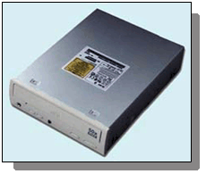

 Odczyt danych z płyt CD-ROM odbywa się za pomocą odpowiedniego urządzenia, zwanego napędem CD-ROM. W celu zapisania danych na dysku CD należy komputer doposażyć w urządzenie zwane nagrywarką (wypalarką). Zapis odbywa się na specjalnie do tego celu przygotowanych płytach, które posiadają oznaczenie CD-R. Szczególną odmianą są dyski CD-RW (Compact Disk Re-Writable), na których istnieje możliwość wielokrotnego zapisu danych. Ważnym parametrem napędu CD jest, podobnie jak w przypadku dysków, średni czas dostępu, który w obecnie sprzedawanych modelach jest krótszy niż 80 milisekund. Innym istotnym parametrem jest prędkość odtwarzania napędu. Im wyższa prędkość odtwarzania, tym większy transfer danych. Nowoczesne napędy CD osiągają 48-, a nawet 52-krotną prędkość odtwarzania (1-krotna prędkość odtwarzania to transfer danych rzędu 150 kB/s). Napędy CD-ROM umożliwiają odczyt danych z płyt CD zawierających dane komputerowe, jak i płyt CD z muzyką.